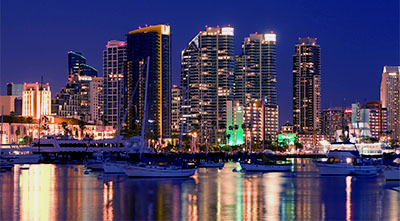
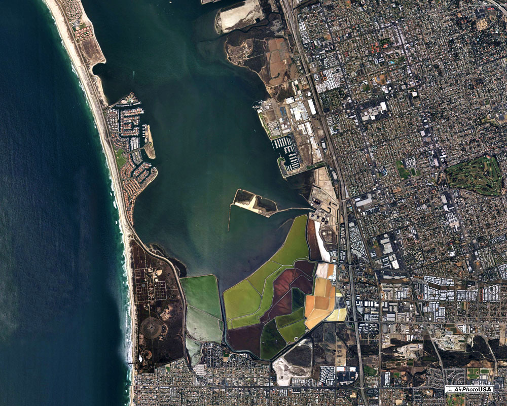

San Diego California
The heart of every city lives in its downtown, and San Diego is no exception. Located only minutes from the airport, San Diego's thriving downtown districts offer a plethora of options for accommodations, activities, dining and cultural attractions, all accessible by foot or by trolley. Modern and historic buildings stand side-by-side, in the downtown historic Gaslamp District, housing shops and boutiques, trendy nightclubs, rooftop bars and fine dining restaurants.
San Diego Satallite View
San Diego’s distinct downtown neighborhoods offer a diverse variety of activities for every visitor, from families to sophisticated urbanites, with plenty to see, discover and indulge. With the legendary Gaslamp Quarter nestled in its core, San Diego’s downtown sits next to the beautiful San Diego Bay, offering scenic views of the water as you walk through the bustling urban streets of this clean, friendly and accessible downtown district. From museums and bayside boardwalk communities, to posh nightclubs and high-profile restaurants, all accessible on foot, trolley, train or cab, you won’t be short of things to do during your stay.